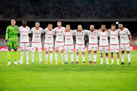

La Società Sportiva Calcio Bari, meglio nota come Bari, è una società calcistica italiana con sede nella città di Bari. Milita in Serie B, la seconda divisione del campionato italiano.
Allenatore attuale:Moreno Longo PARTITE
| SQUADRE | RISULTATO | DATA | CASA/FUORI |
|---|---|---|---|
| SUDTIROL | 0-0 | 12/05 | FUORI |
| PISA | 1-0 | 04/05 | CASA |
| MODENA | 1-2 | 25/05 | FUORI |